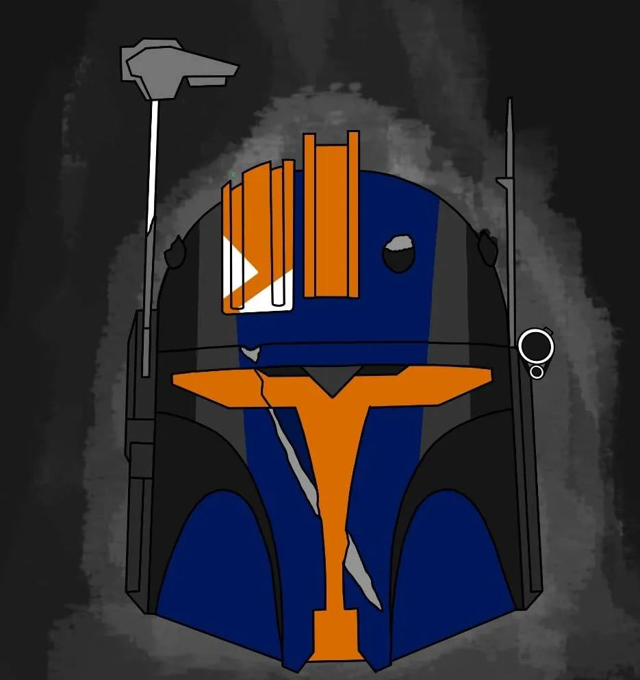
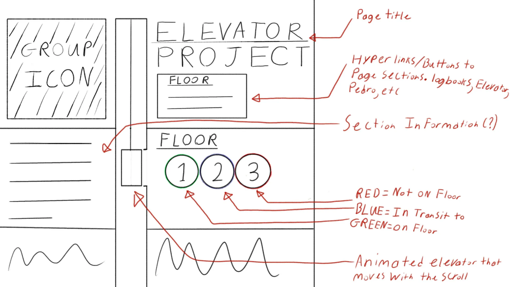

Weekly Log Book - Brendan Burdett
Week 1:
- Experimented with HTML (Using Music, Images/Gifs, other general basic HTML such as adding text)
- Configured github for use through Visual Studio Code terminal for the first time
- Implemented hyperlinking to other pages
- Soldered michaels boards for the elevator upgrades
Week 2:
- Developed the gantt chart (further discussion required for phase 2)
- Drew a rough draft for the website UI
- Began implementing the UI for the website using CSS

- Continued work on michaels boards
- Introduced toggle button image to the home page (using temporary images)
- Place Holder
Week 3:
- Revamped the website to include changes requested in week 2 debreif
- Changes Made:
- Butons Changed from placeholders to real buttons
- Background changed to a more stylish background that can scale easily
- Text was made to scale with the page
- Finite state for buttons where only 1 may be green at any given time
- To do before debrif: Make other elements scale correctly with page. Continue working on looks and other functionality. Add elevator status section as requested.